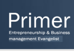

Daum DNA는 대학교 IT 기술 동아리 및 창업 프로그램 지원을 통해 외부와 상생 협력을 진행하고 있습니다.
가상 서버 및 개발 도구 지원, 각종 기술 행사 초청, 제주 초청 프로그램 운영 등을 통해 귀기울이고 서로 대화 하고 있습니다.
창업 및 동아리 지원에 관심 있으신 분들은 공식 블로그을 참고하시거나, 지원 게시판을 활용하시기 바랍니다.
창업 지원 및 교육

Primer 엔턴쉽
소 개 프라이머는 후배 기업가들의 성공을 돕는 새로운 형태의 엔젤 인큐베이션, 멘토 네트웍입니다